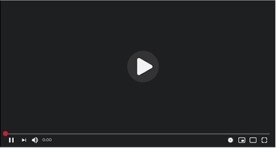

 Junta de Inicio de cursos 324 vistas 9 de Febrero, 9:00 hrs. Salón 2 Comentarios La junta trata como tema principal todos los eventos del año y nuevas estrategías de trabajo. Ver Junta
Junta de Inicio de cursos 324 vistas 9 de Febrero, 9:00 hrs. Salón 2 Comentarios La junta trata como tema principal todos los eventos del año y nuevas estrategías de trabajo. Descargar Minuta Ver Junta
Junta de Inicio de cursos 324 vistas 9 de Febrero, 9:00 hrs. Salón 2 Comentarios La junta trata como tema principal todos los eventos del año y nuevas estrategías de trabajo. Descargar Minuta Ver Junta